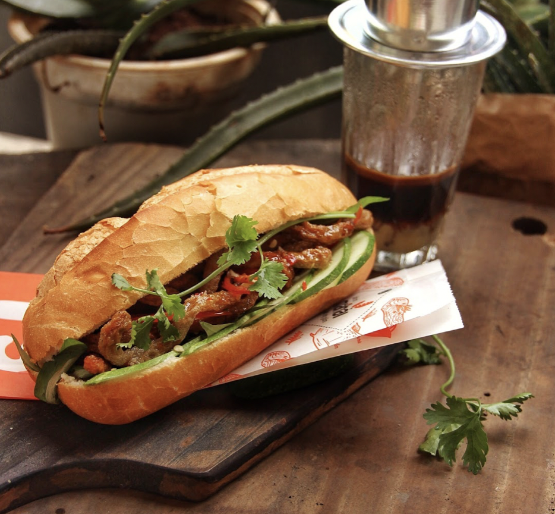

Banh Mi
Home

Description
It's very popular in VietNamese lifestyle. It's cheap, convenient, and could be seen all over VietNam.
Some famous restaurants: Banh Mi Huynh Hoa, Banh Mi Ca Map, ...
Ingredients
- Vietnamese Cold Cuts
- Very crusty baguettes
- Pate
- Mayo
- And so on ...
Steps
- Split the roll down the top middle (not along the side like you'd normally do)
- Smear with pate then mayo on one side (both if you’re feeling super indulgent)
- Jam in the ham, cucumber strips, carrot, green onion, then lastly coriander/cilantro
- Finish with a sprinkle of chilli (go hard or go home!) and a little sprinkle of Maggi Seasoning (about 1/2 tsp)